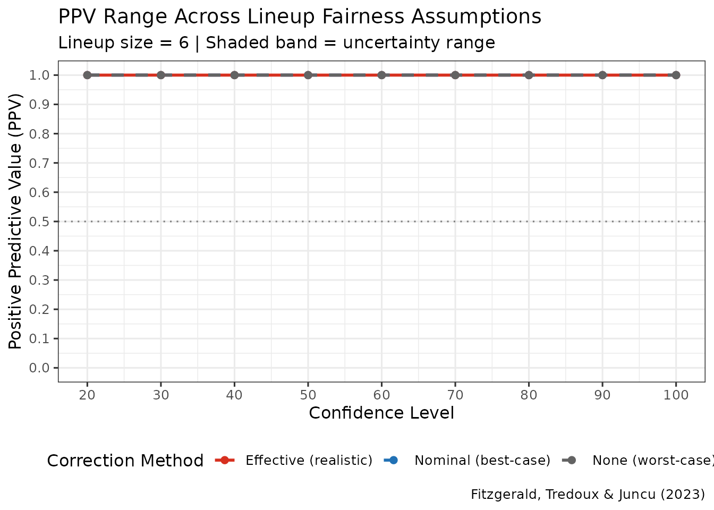
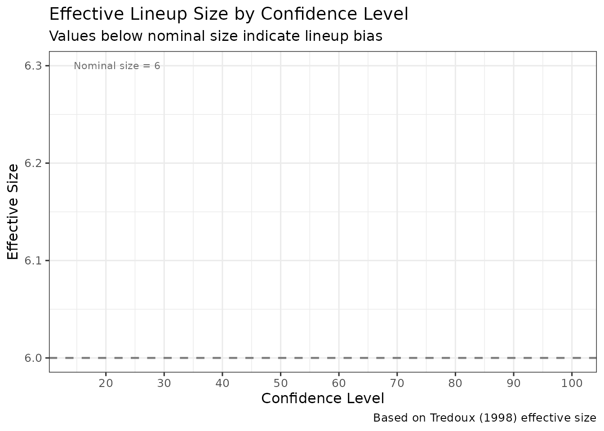

Information and Error-Rate Metrics
EIG and PPV-Range for Lineup Decisions
Colin G. Tredoux
Tamsyn M. Naylor
2026-10-29
Source:vignettes/information_error_rate_analysis.Rmd
information_error_rate_analysis.RmdAcknowledgement. Large language models supplied by Anthropic and OpenAI were used in preparing this vignette, to assist with checking code, testing the veracity of the approaches described, and on occasion editing the text. Responsibility for the content rests with the authors.
Introduction
This vignette demonstrates two complementary approaches for evaluating lineup evidence:
- Expected Information Gain (EIG) following Starns et al., which quantifies how much a response reduces uncertainty about guilt.
- PPV-range estimation following Fitzgerald, Tredoux, and Juncu, which reports how positive predictive value changes under different corrections for lineup size.
Both methods use the same data format as ROC/CAC analyses: a data
frame with target_present, identification, and
confidence columns.
1. Expected Information Gain (EIG)
In plain terms
Before running a lineup, you are uncertain whether the suspect is guilty. After the witness responds, you are — usually — less uncertain. EIG measures how much of that uncertainty the procedure removes, on average.
The unit is the bit, which has a concrete meaning: one bit is the uncertainty in a fair coin toss. If you begin thinking guilt is a coin toss and end up certain, you have gained exactly 1 bit. An EIG of 0 means the responses told you nothing; an EIG of 1 (with a 50% prior) would mean every response resolved the case completely.
The virtue of this is that it grades every response, not just identifications. A confident rejection is informative — it makes guilt less likely — and EIG counts that, where a measure built only from suspect identifications cannot.
The arithmetic
Uncertainty is Shannon entropy. For a probability of guilt,
which is 1 bit at and 0 bits at or .
For each response category — a decision crossed with a confidence bin — Bayes’ theorem gives a posterior , and the information that response carried is the drop in entropy:
EIG is the average of those, weighted by how often each response occurs:
Two consequences are worth noting. Individual responses can have
negative information gain — a response that moves
belief towards 0.5 increases uncertainty — but the expectation over all
responses cannot be negative. And EIG depends on the prior
,
which is set by prior_guilt and is a property of the
investigation, not of the procedure.
eig_obj <- make_eig(
lineup_example,
confidence_bins = c(0, 60, 80, 100),
show_plot = FALSE
)
eig_obj$eig
#> [1] 0.2011801Against a prior entropy of 1 bit, that is 20% of the uncertainty removed — informative, but a long way from resolving the question.
Response-level information gain
knitr::kable(
head(as.data.frame(eig_obj$response_data), 8),
digits = 4, row.names = FALSE,
caption = "Per-response information gain and posterior probability of guilt, lineup_example."
)| response | n_guilty | n_innocent | p_x_given_guilty | p_x_given_innocent | identification | confidence_level | p_response | posterior_guilty | posterior_entropy | information_gain |
|---|---|---|---|---|---|---|---|---|---|---|
| suspect_(80,100] | 100 | 4 | 0.1429 | 0.0057 | suspect | (80,100] | 0.0743 | 0.9615 | 0.2352 | 0.7648 |
| suspect_(60,80] | 82 | 12 | 0.1171 | 0.0171 | suspect | (60,80] | 0.0671 | 0.8723 | 0.5510 | 0.4490 |
| suspect_[0,60] | 233 | 72 | 0.3329 | 0.1029 | suspect | [0,60] | 0.2179 | 0.7639 | 0.7884 | 0.2116 |
| reject_[0,60] | 67 | 201 | 0.0957 | 0.2871 | reject | [0,60] | 0.1914 | 0.2500 | 0.8113 | 0.1887 |
| filler_(80,100] | 13 | 30 | 0.0186 | 0.0429 | filler | (80,100] | 0.0307 | 0.3023 | 0.8841 | 0.1159 |
| filler_[0,60] | 165 | 322 | 0.2357 | 0.4600 | filler | [0,60] | 0.3479 | 0.3388 | 0.9237 | 0.0763 |
| filler_(60,80] | 40 | 59 | 0.0571 | 0.0843 | filler | (60,80] | 0.0707 | 0.4040 | 0.9733 | 0.0267 |
2. PPV-range estimation
Positive predictive value is the proportion of suspect identifications that are correct: hits / (hits + false alarms). The difficulty is the denominator. In field data you observe that someone was identified, but not whether a target-absent identification landed on the suspect or on a foil — and only the former is a wrongful identification.
The response is to estimate the innocent-suspect identifications from the observed errors, and the estimate depends on an assumption about lineup size (Fitzgerald, Tredoux & Juncu, 2023):
- Nominal size. Errors are spread evenly over all members, so of them fall on the innocent suspect. The most optimistic assumption, and it requires the lineup to be perfectly fair.
- Effective size. Errors are spread over the members that actually attract choices, estimated from the data. Fewer functioning alternatives means more errors land on the suspect.
- No correction. Every mistaken identification is treated as an innocent-suspect identification. The worst case, and a genuine lower bound.
Reporting all three gives a range rather than a single figure resting on an assumption that cannot be checked.
When the three coincide, and why
lineup_example has a designated innocent
suspect: its target-absent lineups record whether the
identification fell on the suspect or a foil. When that is known,
nothing needs estimating, and the corrections have no work to do:
ppv_designated <- make_ppv_range(
lineup_example,
lineup_size = 6,
show_plots = FALSE
)
knitr::kable(
data.frame(
Correction = c("Nominal size", "Effective size", "None"),
`Overall PPV` = round(c(ppv_designated$ppv_nominal$overall_ppv,
ppv_designated$ppv_effective$overall_ppv,
ppv_designated$ppv_none$overall_ppv), 4),
check.names = FALSE
),
row.names = FALSE,
caption = "PPV under three corrections, lineup_example -- which designates an innocent suspect, so all three coincide."
)| Correction | Overall PPV |
|---|---|
| Nominal size | 0.825 |
| Effective size | 0.825 |
| None | 0.825 |
All three are identical, and that is correct rather than a fault: the
count being corrected for is observed directly.
make_ppv_range() says so when it happens.
When they diverge
The corrections matter when no innocent suspect is designated — the usual situation with field data. We can create that case by relabelling the target-absent suspect identifications as foil identifications, which is exactly the information loss that occurs when the lineup did not nominate a suspect in advance:
no_designation <- lineup_example
ta_suspect <- !no_designation$target_present &
no_designation$identification == "suspect"
no_designation$identification[ta_suspect] <- "filler"
ppv_estimated <- make_ppv_range(
no_designation,
lineup_size = 6,
show_plots = FALSE
)
knitr::kable(
data.frame(
Correction = c("Nominal size (best case)",
"Effective size",
"None (worst case)"),
`Overall PPV` = round(c(ppv_estimated$ppv_nominal$overall_ppv,
ppv_estimated$ppv_effective$overall_ppv,
ppv_estimated$ppv_none$overall_ppv), 4),
check.names = FALSE
),
row.names = FALSE,
caption = "PPV under three corrections, same data with the innocent-suspect designation removed. This is the range the method exists to report."
)| Correction | Overall PPV |
|---|---|
| Nominal size (best case) | 1 |
| Effective size | 1 |
| None (worst case) | 1 |
The spread is large — from about 1 to about 1 — and that spread is the finding. An analysis reporting only the nominal-size figure would be asserting that the lineup was perfectly fair, which is precisely what is unknown.
The effective-size correction sits between the two because the lineup’s members do not attract choices equally:
knitr::kable(
data.frame(
`Confidence bin` = ppv_estimated$ppv_effective$ppv_data$confidence,
`Effective size` = round(ppv_estimated$ppv_effective$ppv_data$effective_size, 2),
`Error rate` = round(ppv_estimated$ppv_effective$ppv_data$error_rate, 3),
check.names = FALSE
),
row.names = FALSE,
caption = "Effective size estimated within each confidence bin, against a nominal size of 6."
)| Confidence bin | Effective size | Error rate |
|---|---|---|
| 20 | NA | 0.314 |
| 30 | NA | 1.000 |
| 40 | NA | 1.000 |
| 50 | NA | 1.000 |
| 60 | NA | 1.000 |
| 70 | NA | 1.000 |
| 80 | NA | 1.000 |
| 90 | NA | 1.000 |
| 100 | NA | 1.000 |
Plots
plot_ppv_range(ppv_estimated)
plot_effective_size_conf(ppv_estimated)
Interpretation guidance
- EIG grades every response category, including rejections, and reports how much uncertainty the procedure removes overall. Use it to compare procedures, or to identify which responses carry the evidence.
- PPV range answers the question a court asks — how often is an identification of this kind correct — and makes visible how much the answer depends on an untestable assumption about lineup size.
The two are complementary: EIG is base-rate-dependent through
prior_guilt and covers all responses; PPV concerns
identifications only, and is the quantity with direct forensic
meaning.
Technical Details
EIG
Computed over response categories formed by crossing decision with
confidence bin. For each category the posterior comes from Bayes’
theorem using the observed likelihoods
and
,
estimated as response proportions within the target-present and
target-absent arms respectively. Entropies are in bits (base-2
logarithms). The prior is set by prior_guilt, defaulting to
0.5, at which the prior entropy is exactly 1 bit.
EIG inherits the binning issue discussed in
vignette("calibration_decision_analysis"): it is computed
over discrete categories, so a category with no observations in one arm
gives an unbounded likelihood ratio, and the number of bins is a
researcher decision that affects the result.
PPV range
With a designated innocent suspect, innocent-suspect identifications are counted directly and no correction is applied. Otherwise, writing for the target-absent error rate within a confidence bin:
where is effective size estimated within the bin. PPV then follows as hits / (hits + estimated innocent-suspect identifications).
Assumptions
- Target-present and target-absent lineups are independent samples.
- The nominal-size correction assumes a perfectly fair lineup. It is a bound, not an estimate.
- Effective size is estimated per confidence bin, so bins with few observations give unstable corrections — check the counts before relying on a bin.
- Effective size is itself a plug-in estimate and is biased downward
at small samples; see the “Small-sample bias” section of
?esize_T. A downward-biased effective size makes the correction more conservative, so the effect is in the safe direction, but it is not negligible.
References
Fitzgerald, R. J., Tredoux, C. G., & Juncu, S. (2023). Estimation of eyewitness error rates in fair and biased lineups. Law and Human Behavior, 47(4), 463-483.
Starns, J. J., Cohen, A. L., & Rotello, C. M. (2023). A complete method for assessing the effectiveness of eyewitness identification procedures: Expected information gain. Psychological Review, 130(3), 677-719.
Further Reading
-
?make_eig,?make_ppv_range -
vignette("calibration_decision_analysis")for the Bayesian information-gain curves, which report the same evidence on a per-response rather than expected basis